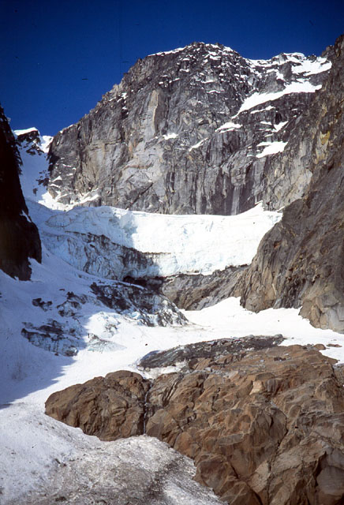
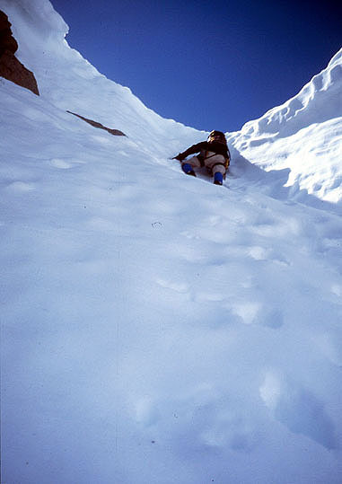
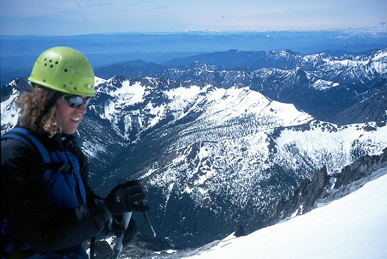
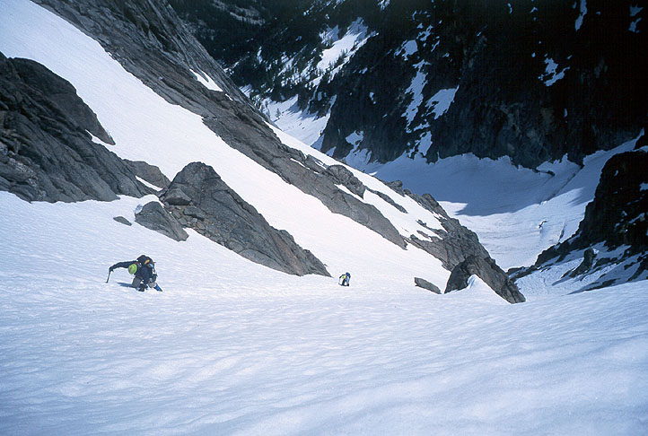
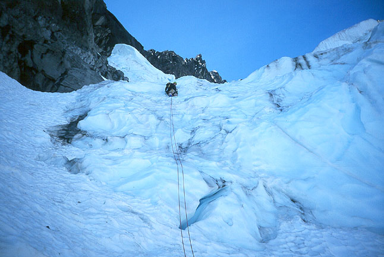
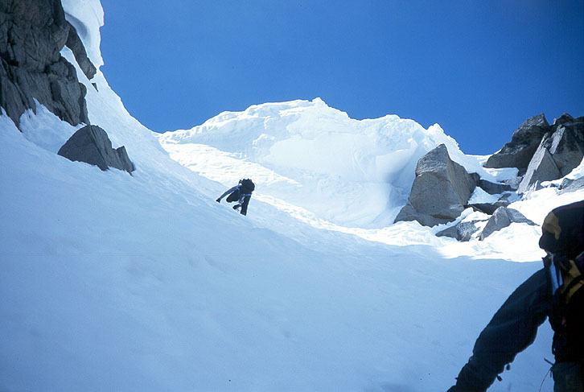
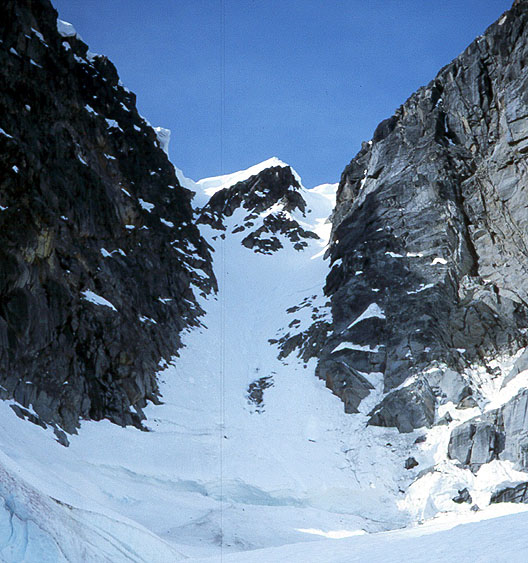
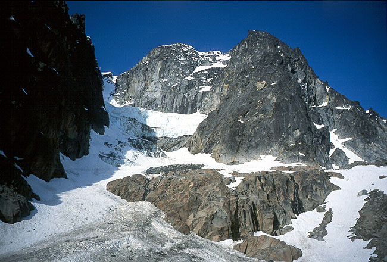
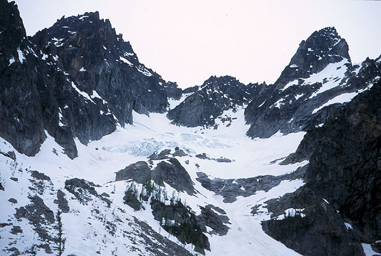
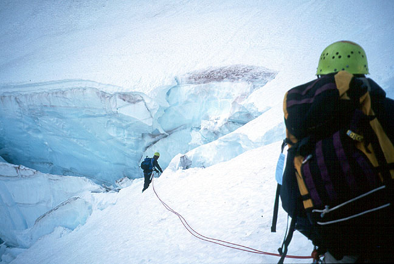

Mount Stuart Ice Cliff Glacier
- Mount Stuart, Ice Cliff Glacier
- June, 2002
- Text by Daniel Smith
Michael has kindly allowed me to write this trip report. I won’t promise you the same gentle humor that Michael’s writing is known for, but I will try to at least get the facts (mostly) straight.
So it came to be that Alex, Michael and myself would be doing Ice Cliff Glacier as a day trip with a summit of Sherpa Peak via the West Ridge if we had time and the inclination. We were all in agreement to an early start so I met Alex and Michael in North Bend at 12:30. By 3:00 AM we were packed up and hiking down the trail.











The approach to the North side of Mt Stuart offers a little for every taste, a wide easy trail, off trail bush-whacking, a couple of sporty log crossings over creeks and a lot of boulder hopping. The only thing it (thankfully) lacks is devils club and slide alder. The boulder hopping seemed to go on forever but eventually we hiked up into the moraine below Sherpa Peak and Mt Stuart. A little after 6:00 we were gearing up for the route.
We climbed firm snow and occasional ice to the base of the Ice Cliff where Alex and Michael roped up and I charge on ahead. The ice cliff was in fine shape, offering solid ice and AI 2+ climbing. Half way up I started cursing my impatience and wished for a rope as I felt out of practice and a bit exposed. I worked carefully up the ice cliff until reaching a lower angled chute. I motored to a conveniently located flat spot on top of the cliff and drank some water and waited for Alex and Michael.
The next section involved crossing crevasses on some questionable looking snow bridges. I tied in and led off finding the bridges just fine. We wandered back and forth across the glacier as crevasses dictated. The route steepened and we bypassed the bergschrund on the left with Michael in the lead. I noted how much more snow was here now than when I was here four years ago while attempting the Girth Pillar route. I had fallen when a hold broke and got pretty banged up. I was able to find the gear I had left, still in place four years later. The abundance of snow allowed me to climb up to the first piece by on a tongue of ice. I took the number 3 Camalot as a souvenir.
We climbed to a nice spot carved out by an avalanche where we unroped for the final chute. We climbed up into the sun, kicking steps and breathing hard. [Dan is being modest - he sped ahead, kicking nice steps for over 1000 feet. We would have helped if we could catch him! - ed.] The couloir necked down and gave a final sting the tail in the form of a nearly vertical wall we had to pull over.
We were greeted by a stiff breeze and a long line of hikers bound for the summit via the Cascadian Couloir, many without ice axes and clad in only shorts and T-shirts. We felt satisfied with what we had climbed and decided against attempting Sherpa. The snow on the south side was baked to the consistency of oatmeal and the traverse to the decent was nerve wracking. After some discussion we located the proper notch down onto the Sherpa Glacier.
Down we went one by one. Michael and I were down first and we leaped across the ‘schrund and directed Alex to the safer walk around. Shortly after, Michael had to outrun an avalanche of snow blocks that slid off of a rock rib. [Oh yeah, I forgot about that! - ed.] The descent and walk out from then on were uneventful and we ran into far fewer hikers than expected. We arrived back at the car at 5:00. A fine dinner back in Leavenworth completed the trip.